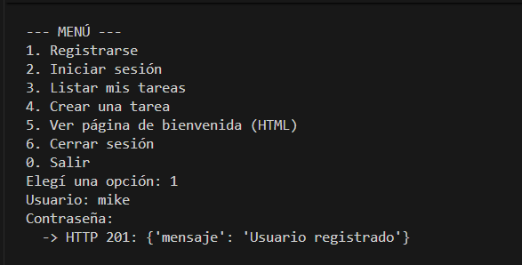
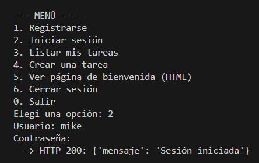
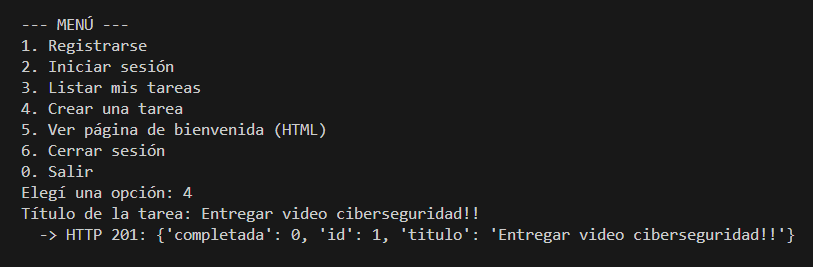
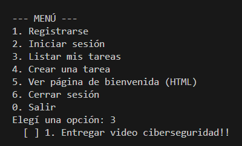
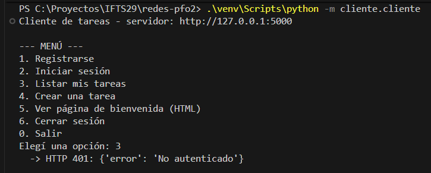

API REST con Flask, persistencia en SQLite, contraseñas hasheadas (scrypt) y cliente de consola interactivo.
Esta página es estática (GitHub Pages no ejecuta Flask). Muestra la documentación y las evidencias de ejecución; para probar la API hay que correrla en local siguiendo el README.
pip install -r requirements.txt
python -m servidor.app # terminal 1
python -m cliente.cliente # terminal 2POST /registro - crea un usuario (201, 400, 409)POST /login - inicia sesión con cookie (200, 401)POST /logout - cierra sesiónGET /tareas - página HTML de bienvenida con las tareasGET /api/tareas - lista de tareas en JSONPOST /api/tareas - crea una tarea (201)



